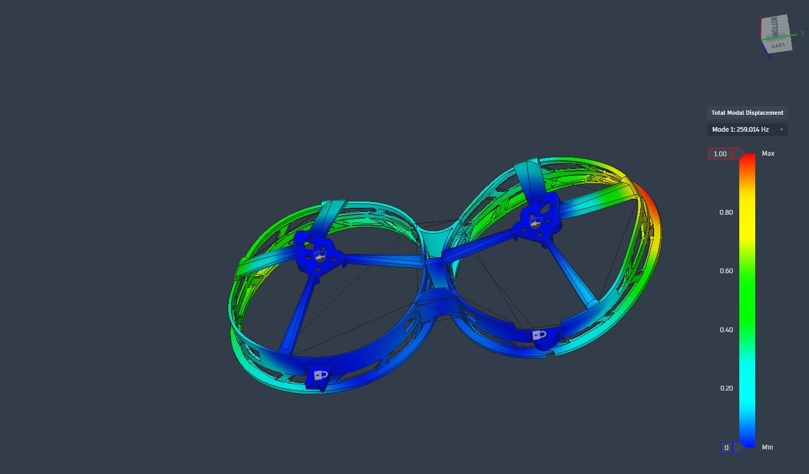
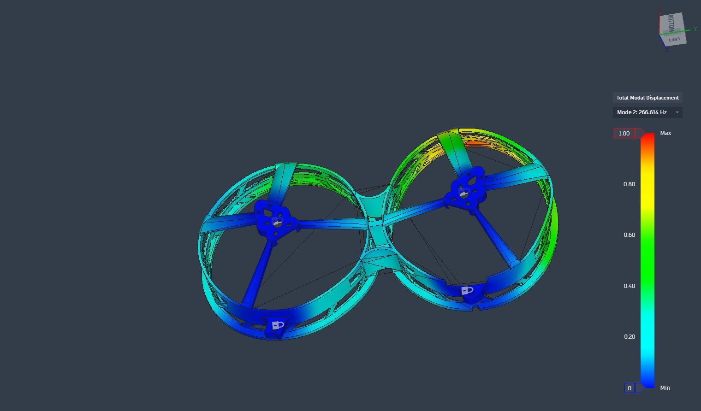
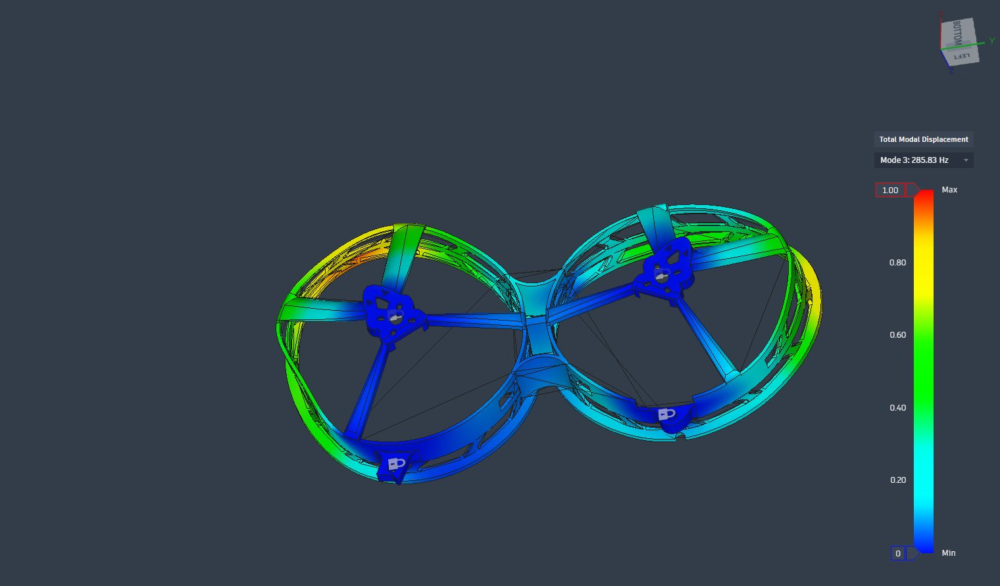

Team Radiance · Dept. of Computer Science & Engineering · University of Moratuwa
Language-Guided Goal Understanding for Simulation-Trained Visuomotor Drone Navigation
Scene semantics automate the training data a vision-only drone policy learns from.
We give every Gaussian of a photorealistic 3D room a meaning. A phrase such as “red tool chest” then becomes a 3D goal, an approach point the drone can reach safely, and an expert flight to it, with no hand-placed waypoints.
Try a phrase
Pick a phrase to see what our console, Galley, returned for it in the backroom scene (532,361 Gaussians). The clips are screen recordings, not renders.
- Gaussians coloured by relevancy to the phrase
- goal: the centre of the best cluster
- approach point, with the drone’s 0.19 m body sphere
The problem
A policy that sees, but does not understand
SOUS VIDE’s SV-Net flies a drone from camera images alone, trained inside a photorealistic 3D copy of the room. Its training data is made by hand: a person places waypoints and an expert controller flies that one course.
Its goal input is just numbers, with no idea what the target is. Each policy learns one trajectory, every new goal needs new hand-made data, and results with several goals are inconsistent.
Aim and hypothesis
Let semantics generate SV-Net’s training data automatically.
Goals are named in words and found in the 3D scene; courses and expert flights are generated around them.
We hypothesise that a policy trained this way performs better on dynamic goals (the same goal moves) and multi-goal scenarios.
Approach
From a phone video to a trained policy
- 1 · CaptureRoom → 3D splatPhone video becomes a metric 3D Gaussian splat (SfM, ArUco marker for scale).
- 2 · Add meaningSemantic splatCLIP and DINOv2 features from 270 photos are lifted onto every Gaussian.
- 3 · AskPhrase → 3D goalRelevancy, clustering, a safe approach point. Offline, on the CPU.
- 4 · Expert flightCourse + MPCMinimum-snap course; the MPC expert flies it while FiGS renders the camera.
- 5 · DatasetsAutomated rolloutsMany goals, moving goals, multi-goal courses.
- 6 · SV-NetTrain and test the policyImages → controls at 20 Hz, onboard.
Findings
Objects found from a phrase
Top-1 hits out of 29 objects in two rooms (13 backroom, 16 flightroom), annotated before any result was seen. Four ways of building the 2D teacher features, each lifted onto the splat without training (lift) or learned by a trained feature field (FMGS).
- 0.7–2.8 s
- per query, CPU only (single-scale / multi-scale features)
- +4.2 dB
- PSNR from refined camera poses
- 20 ms
- to recolour 532 k Gaussians
- ≤ 73 mm
- expert tracking error flying to a phrase goal
29 objects is a small set: no difference between the four teacher designs is statistically significant. The multi-scale lead over single-scale comes partly from its detection floor; compared at an equal number of false detections, SAM regions without level choice find the most (24 of 29). Details in the semantic embedding report.
Galley, our console
Every step in one web app
Galley runs the whole pipeline on the lab GPU: capture, splat training, semantic features, the splat editor, the course editor, expert flights and SV-Net cohorts. Tap a feature to play its recording.
Simulation
Expert flights, and where the student is
SV-Net student · status
Trained end to end, not flying yet
Our first student cohort (Maverick, circuit course) runs through the full SV-Net pipeline, but it does not yet fly the course: the expert tracks to 1.7 cm, the student’s mean tracking error is 9.4 m. The next cohort uses a larger dataset. Testing the hypothesis waits on a student that flies.
Proposed drone
Built to carry the policy
Prop guard: first natural frequency
Modal analysis in Autodesk Fusion of PropGuard v9, printed in PA 12 carbon-fibre nylon (EOS PA 603-CF): 8 modes, 32,849 parabolic elements, fixed at two mounts.
The first mode sits at 259 Hz, 30 % above the 200 Hz target, keeping the guard’s resonance away from the frequencies the motors excite.



Roadmap
Where we are
- Replicate SOUS VIDE training and the FiGS simulatorDone
- Semantic feature fields: build and comparePartly done
- Phrase → goal → course → expert flightDone
- Automatic datasets → test SV-Net (dynamic and multi-goal)Next
- Build the drone; fly on hardwareIn progress
Team
Team Radiance
- P.A.S. Anusara220037Psavinu.22@cse.mrt.ac.lk
- M.H.S. Gunathilaka220199Lhimala.22@cse.mrt.ac.lk
- S.S. Waduge220673Ksansika.22@cse.mrt.ac.lk
- S. Yutharsan220738Pyutharsan.22@cse.mrt.ac.lk
Supervisor: Dr. Chathuranga Hettiarachchi
Built on SOUS VIDE and FiGS by the Stanford Multi-Robot Systems Lab. Semantic features follow LERF and FMGS, with CLIP and DINOv2 teachers.